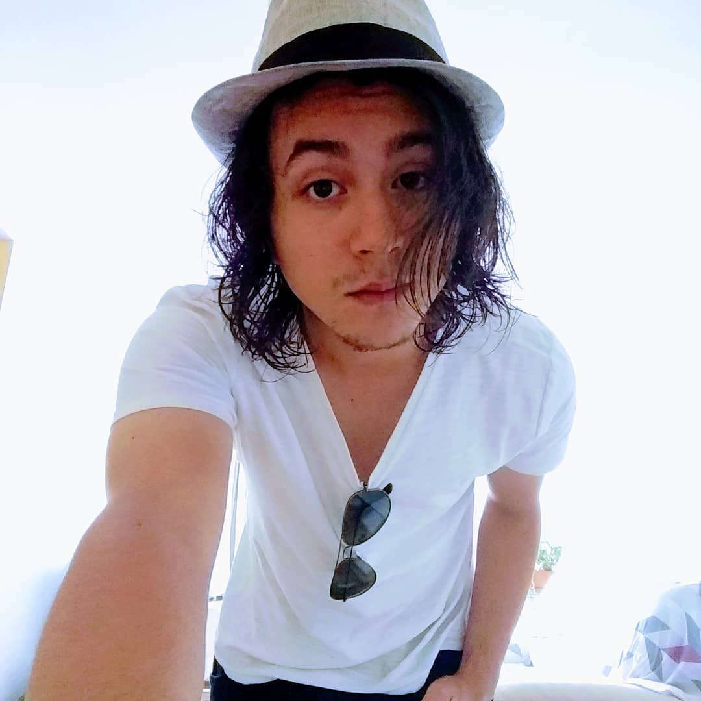
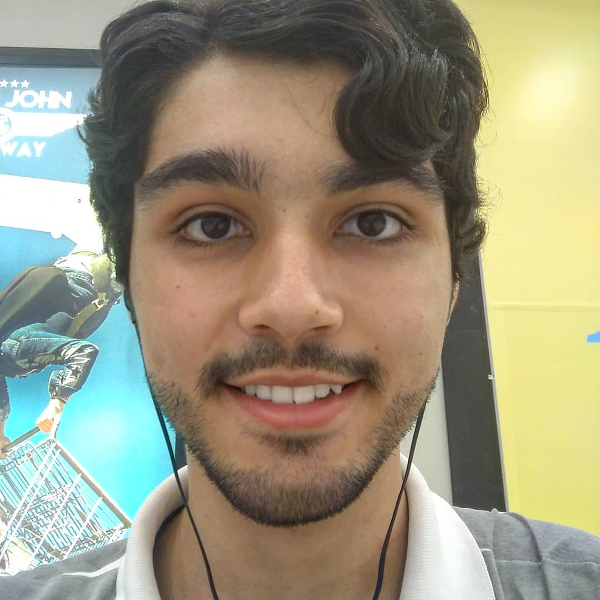
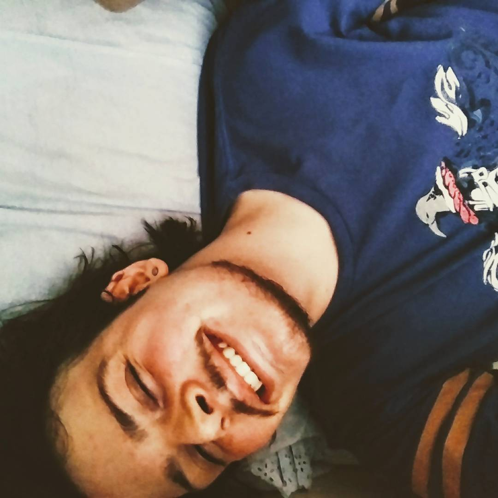
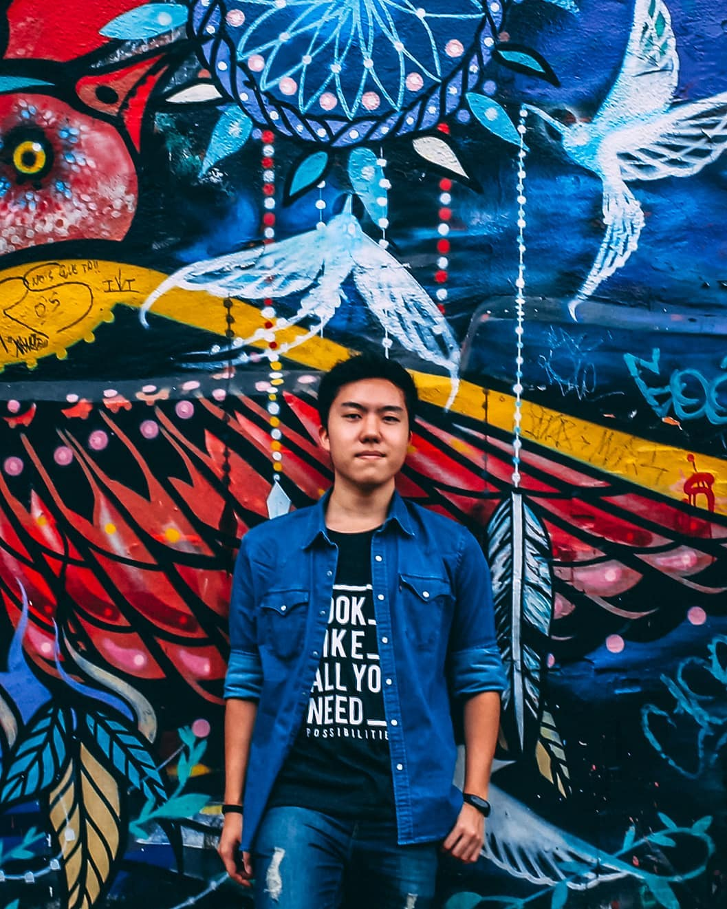
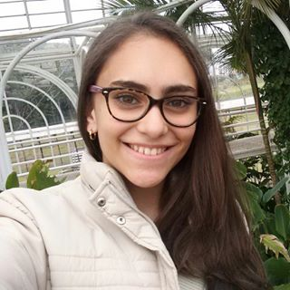
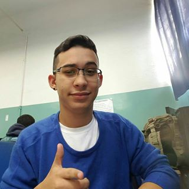
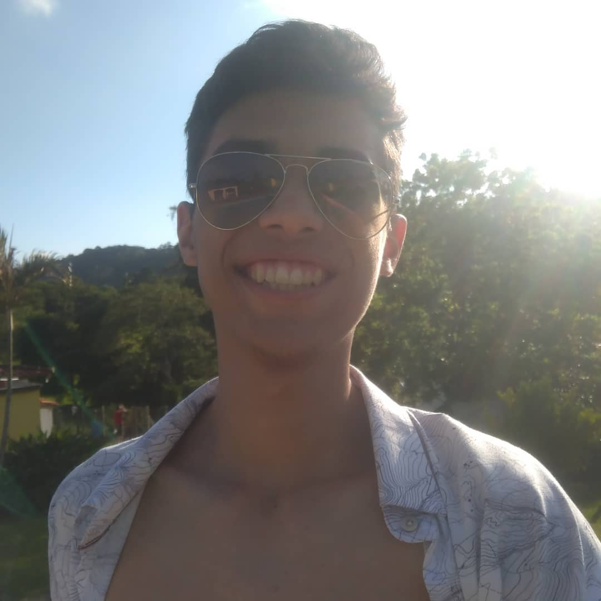
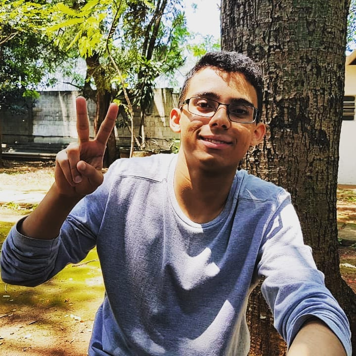
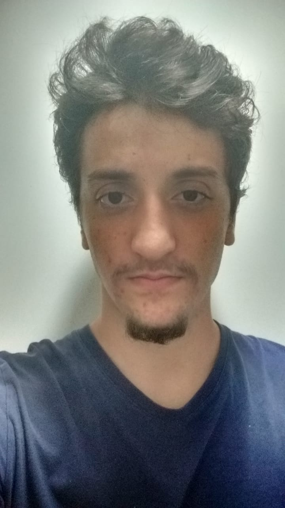

Depois de muito tempo, finalmente chegamos com o nosso "plano de governo" pro centro acadêmico de ADS.
Por muito tempo, nosso CA foi uma bagunça. Não eramos incentivados a ficar lá, não tinha muita coisa pra fazer por lá...
O curso não apoiava os veteranos a conversar com calouros, não tinhamos muitos beneficios que são nossos por direito...
(Se tudo der certo) Agora é a hora disso mudar!
É hora dos semestres se comunicarem, é hora do nosso curso ter visibilidade, É HORA DE SER POSSÍVEL BOTAR MÚSICA NO PC DO CA SEM RECEBER XINGO!!
No nosso plano, queremos fazer com que os calouros recebam ajuda dos mais antigos. Queremos poder ter coisas mais interessantes no próprio CA, e começar a arrecadar com produtos para melhorar nosso espaço.
Então sem mais encheção de saco, aqui estão nossos consagrados:

Gabriel Datovo
| Nome: | Gabriel Datovo Inoue Montalbini |
| Cargo: | Presidente |
| Descrição: | É o nosso presidente. Tem grande carisma e potencial de conversa com os docentes. Rolou o D20 e tirou 21 em carisma. Não esqueci de mencionar que ele é lindo né? |

Vinicius Cortez
| Nome: | Vinicius Eustaquio Cortez |
| Cargo: | Vice-Presidente |
| Descrição: | Semi-Deus na programação. Se existe uma linguagem, ele conhece. Ele dá monitoria, e, quando pode, quebra o mercado do WoW. Irineu? |

Guilherme Leão
| Nome: | Guilherme Oliveira de Souza Leão |
| Cargo: | Diretor de Comunicação |
| Descrição: | Esse cara aqui é aquele que sempre vai tentar entrar em contato com o pessoal novo. Agora ele ta bem gordo e com um cabelo estranho, mas logo isso muda (maybe). Provavelmente ele ta empolgado com algo e tá viciado nisso por enquanto (e daqui a 3 dias já mudou o vício). Ele toca música e tenta ser engraçado, além disso ele que fez tudo isso aqui (Oi). |

Arthur Kazuo
| Nome: | Arthur Kazuo Uyeyama |
| Cargo: | Diretor de Eventos |
| Descrição: | Se tem alguma coisa no mundo impossível, esse cara consegue fazer. Na mesma vibe do Guilherme, ele nunca se prende à alguma coisa e sempre muda o que faz de tempo em tempo. Conhece MUITA coisa e MUITA gente. |
Bruna Rossini
| Nome: | Bruna Cardoso Correia Rossini |
| Cargo: | Secretária |
| Descrição: | É um amor e tem contato com qualquer um que passa por ai, tem o dom de fazer amizades. Provavelmente a melhor pessoa pra tratar de relações diplomáticas por aqui. |

Luana Faiotto
| Nome: | Luana Tavares Faiotto |
| Cargo: | Diretora Admnistrativa |
| Descrição: | Sempre tem um desempenho bom em todas as aulas, sempre anota tudo que faz sentido e muitas vezes salva a sala toda com suas anotações. Se tem alguém pra mexer com coisas importantes, é ela. |

Gustavo Pereira
| Nome: | Gustavo Pereira Barbosa |
| Cargo: | Diretor de Suporte |
| Descrição: | Menino good vibes do grupo. Proativo em responsabilidade, sempre é um dos primeiros a engatar a marcha no trabalho. Gosta de coisas exóticas (IntelliJ, eca). |

Luis Antonio
| Nome: | Luis Antonio Gonçalves Novaes Angelim |
| Cargo: | Diretor de Suporte |
| Descrição: | Menino pontual. Sempre é o primeiro a chegar e tenta resolver os problemas ajudandos os amiguinhos. Ele gosta do podcast do DJ Rogerinho e nunca esquece uma responsabilidade |

Andrey Lacerda
| Nome: | Andrey Camargo Lacerda |
| Cargo: | Diretor de Suporte |
| Descrição: | Esse cara é um Semi-Deus em tudo. Provavelmente você trabalha pra ele. Responsável, sempre dá seu máximo em trabalhos. Nunca se atrasa/falta e sempre tira as melhores notas da turma (além de ser o cara mais engraçado do mundo todo). |

Pedro Freitas
| Nome: | Pedro Brenicci Freitas |
| Cargo: | Diretor de Suporte |
| Descrição: | Provavelmente o cara que vai fazer você rir muito com uma coisa aleatória (pergunta sobre a lanchonete). Tem um bom desempenho no curso e curte jogar um Happy Wheels ou um Fate quando não tem aula. |
Esses são as lindezas que provalvemente vão conseguir coisas pro curso de agora em diante
Não se esqueça de votar quando for preciso, todo o resto você encontra no nosso Discord, até logo nerdz!